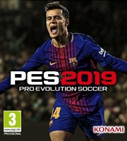

Konami compite por hacerse con el trono de la simulación deportiva de fútbol con PES 2019. Cargado de novedades jugables y visuales, Konami pretende que Pro Evolution Soccer 2019 vuelva a permitir a los jugadores ponerse en el rol de sus futbolistas
favoritos y llevarlos a la gloria. Con Philippe Coutinho como carátula, y con especial protagonismo para un David Beckham que encabeza la lista de Leyendas de este año, esta entrega para la temporada 2018-2019 de la saga PES es, según la propia
Konami, la más ambiciosa y "la mejor" que han hecho jamás.
PES 2019 (PC)
$ 800
Desripción
Fútbol en estado puro con unos movimientos más realistas que nunca en los jugadores más conocidos del momento, así como nuevas mecánicas de tiro, una característica muy prometedora de Cansancio Visible, y nuevas celebraciones, animaciones, físicas de
red y muchas cosas más. Pro Evolution Soccer 2019 no se queda en lo visual, sino que también introduce muchas novedades jugables de cara a "llevar al jugador a un nuevo nivel" de la mano de sus futbolistas favoritos. Liga Master, Torneos Online y un
myClub totalmente renovado son algunos de los puntos clave para invertir muchas horas en PES 2019. Modos individuales y multijugador como principales reclamos de uno de los juegos futbolísticos del momento que luce esta vez mejor que nunca gracias a
los interfaces renovados, a la iluminación global en tiempo real, a la resolución 4K en todas las plataformas y al soporte HDR y, además, a la tecnología Enlighten empleada para efectos visuales realistas.